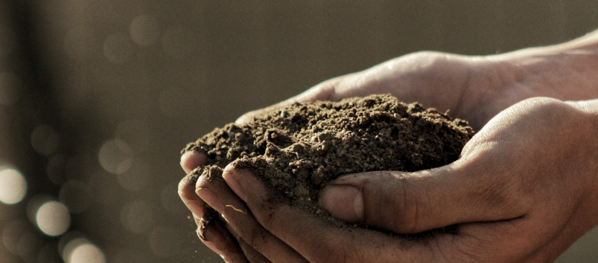

Better Days
Better Days
건강한 땅, 건강한 쌀

- "Nurturing Our Planet"
-
켈로그는 지구 환경을 보호하기 위해 물과 에너지 절약, 탄소 발자국 줄이기 등의 친환경 활동을 펼쳐오고 있습니다.
2015년 전세계적으로 소비자와 농부들의 삶을 풍요롭게 하기 위한 ‘사회-환경을 지키기 위한 약속’을 발표하고 시니어 여성 농부, 소규모 농가들을 지원해오고 있습니다.
- “건강한 땅에서 자란 현미로 양질의 시리얼 만들어요!”
-
국내에서는 2015년부터 충남 서천군 한산면 일대 농가에서 수확한 현미로 2019년까지 총 3,113톤의 현미를 수급 받아 ‘현미 푸레이크’ ‘오곡 현미’, ‘아몬드 현미 푸레이크‘를 생산해 오고 있습니다. 현미의 양은 매출로 환산 시 85억원이 넘는 어마어마한 숫자입니다.
2017년에는 현미농가와의 상생협력을 위해 한산초등학교에서 친환경 교육을 실시한 이래 2019년 볏짚 환원, 2019년 모내기까지 3년 연속으로 현미 농가를 위한 사회공헌활동을 지속적으로 펼쳐오며 동반 성장을 도모해오고 있습니다.
- “현미 농가의 건강한 농토 보존을 지원합니다”
-
2018년에는 한산농업협동조합, 서천군 농업기술센터, 사단법인 자연의벗 연구소와 함께 12개 현미 농가를 지원하는 ‘건강한 땅, 건강한 쌀’ 캠페인 활동을 시작했습니다. 2019년에는 임직원들이 직접 손수 줄지어 모를 심는 전통 방식으로 모내기 봉사 활동에도 참여했습니다.
농심켈로그는 책임 있는 식품 기업으로서 농가와 상생하며 환경을 지키고, 좋은 식품 개발과 더불어 더욱 건강한 사회를 만드는 데 지속적으로 기여할 수 있도록 최선을 다하겠습니다.